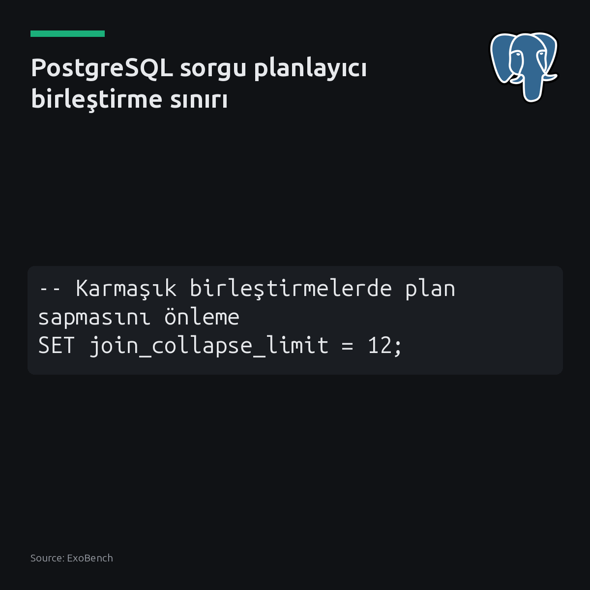
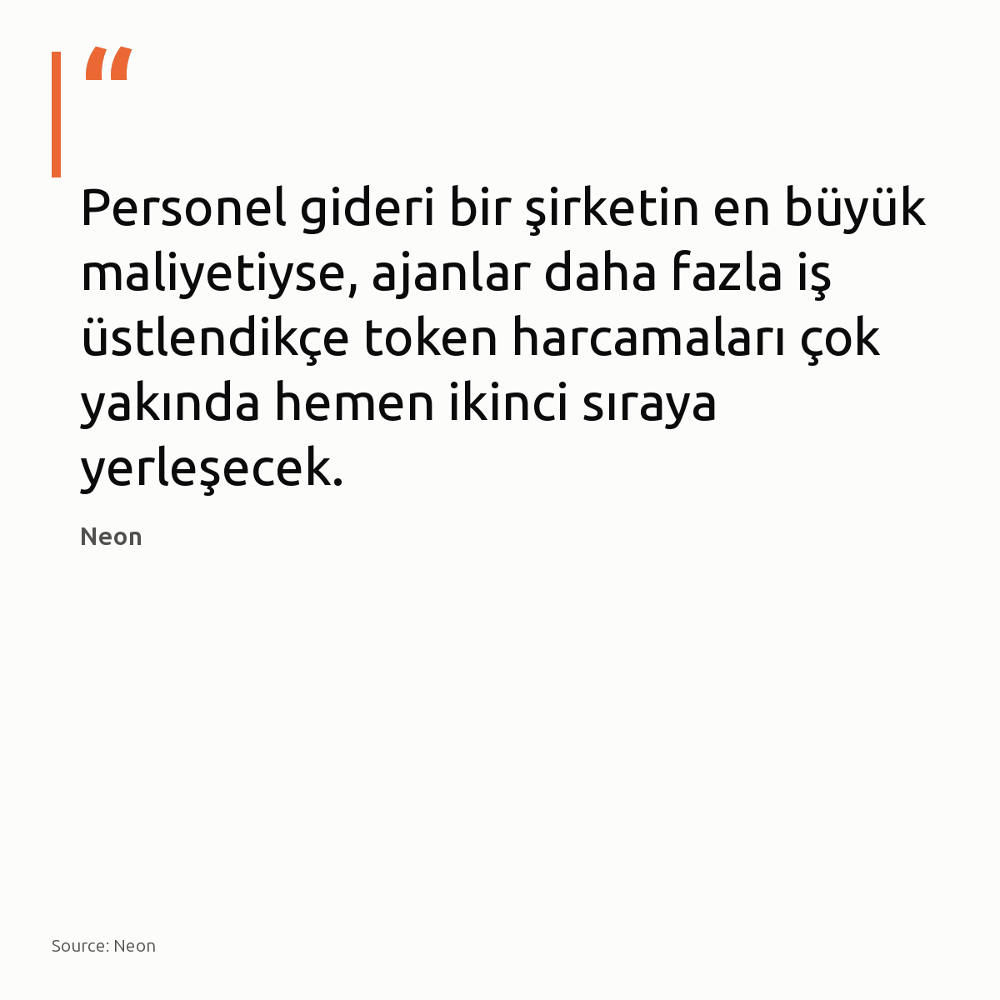
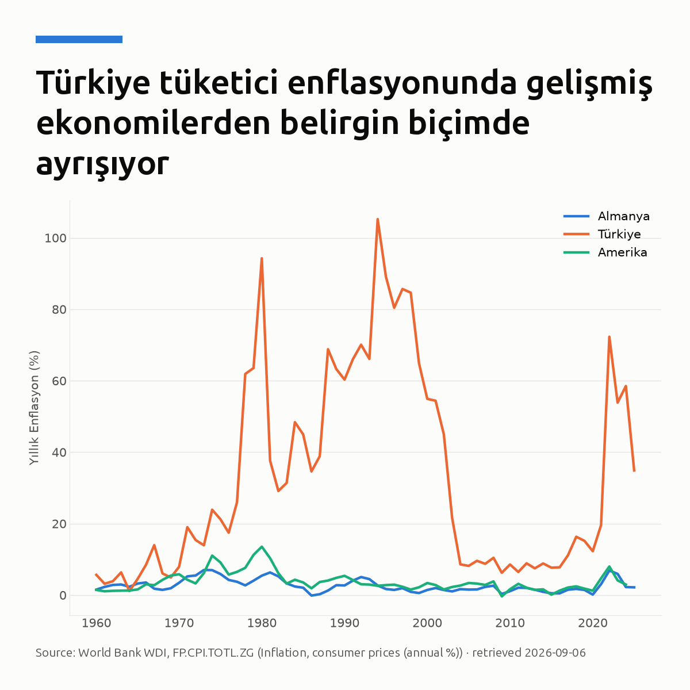
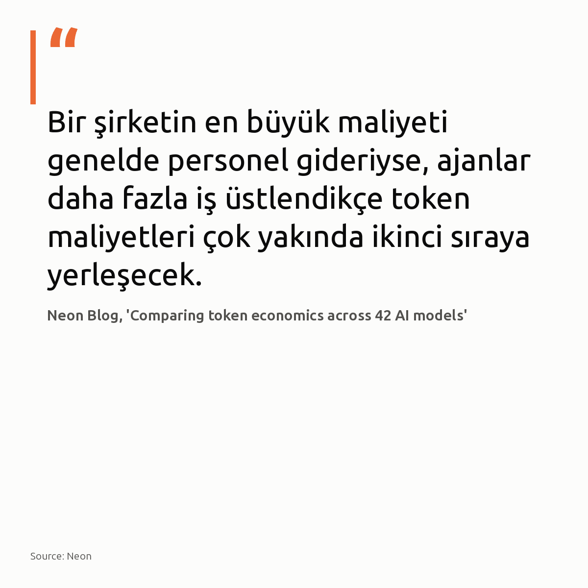
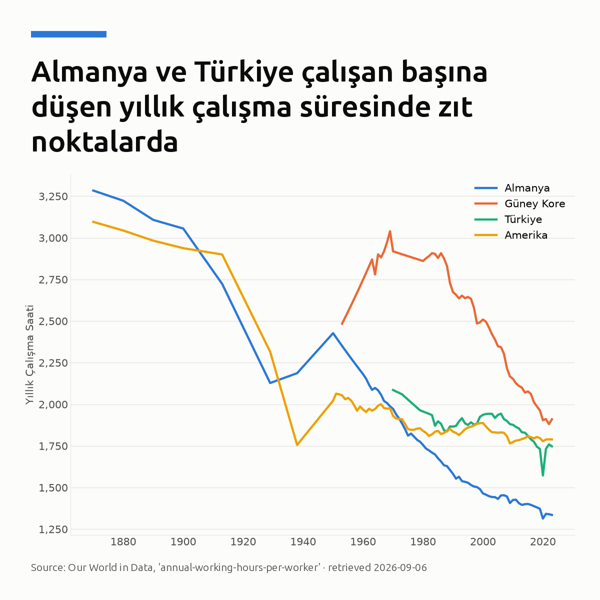

Metni kopyala, kartı indir, LinkedIn'de yapıştır. Bağlantılar gönderiye değil ilk yoruma.

Açık kaynaklı Qwen 3.8 27B, saniyede yaklaşık 1.500 token hıza ulaştı [S1]. Cerebras altyapısında kaydedilen bu hız [S1], açık modellerin kapalı bulut servisleriyle doğrudan rekabet edebildiğini gösteriyor. Karttaki indirme listesinde modellerin her birinin 12 milyonu aşması da geliştiricilerin bu yöndeki ilgisini kanıtlıyor. Apache 2 lisanslı 27 milyar parametreli bu model [S2], 17 GB boyutuna indirilerek yerel iş istasyonlarında da çalıştırılabiliyor [S3]. Bu durum, şirketlerin kullanıcı verilerini dışarıya göndermeden ve yüksek API maliyetlerine katlanmadan yapay zeka çalıştırmasını sağlıyor. Kendi sunucularınızda kapalı API maliyetlerinden kaçınmak için açık modelleri test etmeye başladınız mı? #yapayzeka #qwen #llmKartı indir
Kaynaklar ve detaylı dokümantasyon: • Görsel kaynağı: Hugging Face Hub API, 30 günlük indirmelere göre sıralı 'Qwen' modelleri • [S1] Cerebras Model Dokümantasyonu: https://inference-docs.cerebras.ai/models/overview • [S2] Simon Willison İncelemesi: https://simonwillison.net/2026/Aug/16/qwen-38-27b/ • [S3] LM Studio Q4_K_M Derlemesi: https://simonwillison.net/2026/Aug/16/qwen-38-27b/ • [S4] Bağlam Uzunluğu Analizi: https://simonwillison.net/2026/Aug/16/qwen-38-27b/ • [S5] Hugging Face Model Sayfası: https://huggingface.co/Qwen/Qwen3.8-27B-FP8

Grafikte FastAPI, haftalık 139,7 milyon indirmeyle Flask ve Django'yu geride bıraktı. Karttaki verilere göre Flask haftalık 48,33 milyon, Django ise 12,54 milyon seviyesinde kalırken FastAPI farkı açıyor. Yapay zeka servislerinin yaygınlaşması, asenkron mimariyi ve tip güvenliğini geliştiriciler için temel bir gereksinim haline getirdi. Eski senkron web çatılarına dayalı teknik borçlar, modern API geliştiren ekipleri yavaşlatıyor. Görseldeki yüksek indirme sayıları CI/CD süreçlerini de içerse bile, yeni projelerde FastAPI tercihinin ağırlığı netleşiyor. Yeni bir Python servisi kurarken mevcut mimariniz asenkron ihtiyaçlarınızı karşılıyor mu? #fastapi #python #backendKartı indir
Veri kaynağı: PyPI Stats (pypistats.org) — yansımasız haftalık toplam indirmeler.

Türkiye'de yıllık resmi enflasyon %64,8 seviyesine ulaşarak gelişmiş dünyadan tamamen ayrıştı [S1]. Grafikte görüldüğü üzere Amerika'da enflasyon %2,95 seviyesine gerilerken aradaki makas açılıyor. Merkez Bankası politika faizini %8,5'ten %45'e kadar yükseltti [S2]. Buna rağmen yerel para birimindeki birikimlerin erimesi çalışanların alım gücünü zayıflatıyor. Küresel merkez bankaları faiz indirimine hazırlanırken bilgi çalışanlarının gelir modellerini küresel ölçekte çeşitlendirmesi gerekiyor. Mevcut kariyer ve birikim stratejiniz bu enflasyon ayrışmasına karşı yeterince korunaklı mı? #enflasyon #ekonomi #parapolitikasiKartı indir
Grafik ve veri kaynakları: - Görsel kaynağı: World Bank WDI, FP.CPI.TOTL.ZG (Inflation, consumer prices (annual %)) - [S1], [S2]: CNBC, 2024-01-25, https://www.cnbc.com/2024/01/25/turkey-hikes-interest-rate-again-to-45percent-as-inflation-remains-stubbornly-high.html - [S3], [S4]: CNBC, 2022-10-03, https://www.cnbc.com/2022/10/03/turkey-inflation-hits-83percent-erdogan-vows-to-keep-cutting-rates-.html

Karttaki verilere göre 2025'te elektrik üretiminde yenilenebilir payı Almanya'da %59'a, Türkiye'de %43'e ulaştı. 2025'in ilk yarısında güneş ve rüzgâr üretimi, küresel elektrik talebindeki artışı geride bıraktı [S1]. Hatta küresel talep artışının %83'ünü tek başına güneş enerjisi karşıladı [S2]. Elektrik üretimindeki bu yeşil dönüşüm; sanayiden veri merkezlerine kadar enerji maliyetlerini ve kurumsal regülasyonları doğrudan belirliyor. Kurumunuz, şebekedeki bu dönüşümün getireceği yeni maliyet ve uyum standartlarına hazır mı? #yenilenebilirenerji #enerjidonusumu #surdurulebilirlikKartı indir
Kaynaklar: - Görsel: Our World in Data, 'share-electricity-renewables' - [S1], [S2] Ember, Global Electricity Mid-Year Insights 2025: https://ember-energy.org/latest-insights/global-electricity-mid-year-insights-2025/

Karttaki verilere göre Almanya'da yıllık çalışma 1.335 saat iken, Türkiye'de 1.747 saati buluyor. Almanya, OECD genelinde çalışanların en az süre mesai harcadığı ülkeler arasında bulunuyor [S3]. AB ortalamasında haftalık mesai yaklaşık 34 saat iken, Almanya'da bu süre 28 saate iniyor [S1]. Fakat daha uzun mesai süreleri, çalışanlara daha yüksek bir refah veya üretkenlik sağlamıyor. Rekabet avantajı ofiste geçirilen sürede değil, birim saat başına üretilen katma değerde yatıyor. Çalışma sürelerini uzatmak yerine, birim saatteki katma değerimizi artırmaya nasıl odaklanabiliriz? #verimlilik #calismahayati #insankaynaklariKartı indir
Yararlanılan kaynaklar: • Görsel kaynağı: Our World in Data, 'annual-working-hours-per-worker' • [S1], [S2]: POLITICO - https://www.politico.eu/article/deutsche-bank-ceo-christian-sewing-germany-working-hours-economy/ • [S3], [S4], [S5]: Visual Capitalist - https://www.visualcapitalist.com/annual-working-hours-in-countries-2023/
{kind=link}
{kind=link}
{kind=link}
{kind=link}
{kind=link}